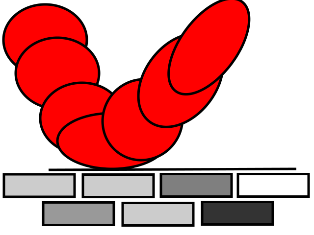

Laboration 4 - (under construction)
Posted: 2015-10-xx Kim Karlsson
Posted: 2015-10-xx Kim Karlsson
Då var det dags att sjösätta den mobila versionen! Det blev en betydligt mer avskalad version än i vanlig browser. Syftet med det är att ge en något tydligare struktur för användaren. Jag vill att upplevelsen ska förbli den samma med hänsyn till den begränsade ytan som det innebär att använda sin mobiltelefon.
Layoten är också markant förändrad i mobilversionen. Här ligger samtliga block underordnade varandra. Det ger ett mer intuativt intyck och lämnar mer plats åt textinnehållet. Bakgrunden ändrades från en nertonad nyans till skarpare vitt, för att ge en skarpare kontrast mot texten. Den ändringen gjordes just med hänsynd till att mobilanvändare kan röra sig i miljöer med mer eller också mindre direkt ljus.
I navigations-menyn togs iconerna bort för att lämna lite mer utrymme. Samt att vissa CSS-funktioner faller bort p.g.a. att det inte finns stöd för det i mobilen. Däremot kan mobilanvändare välja att spara sidan med ett bokmärke på telefonens skrivbord. Genom att sedan klicka på iconen som sparas slipper användaren skriva in adressen för att komam till sidan.
Det kommer alltid finnas utrymme för förbättringar och CSS3 erbjuder flera förbättringar inte bara för utsende utan även funktionalitet.
Posted: 2015-09-16 Kim Karlsson

Det är med blandade känslor som det börjar dra ihop sig för att avsluta denna laboration. Jag ska inte gå in i detalj för varje uppgift, utan tänkte ge en mer övergripande kommentar om arbetet som jag snart lagt bakom mig.
Som vanligt har jag svårt att släppa taget om mitt arbete och känner mer att jag vill fortsätta fördjupa mig i det jag påbörjat.
Det har varit oerhört spännande och lärorikt att få sätta tänderna i CSS. Under hela processen lär man sig ständigt nya saker att tillämpa och det tenderar att bli ett projekt som aldrig tar slut, vilket jag menar i en positiv bemärkelse. Lite som en bra film eller bok som man inte riktigt vill ska ta slut.
Det är väldigt inspirerande att se CSS:n blåsa liv i html-koden. Men allting kommer till sitt slut, så även detta. Efter att ha stirrat sig bild på diverse färgpaletter får jag nog vara nöjd så långt.
Posted: 2015-09-09 Kim Karlsson Edit:2015-09-10
Skapa ett Formulär
Posted: 2015-09-01 Edit: 2015-09-09 Kim Karlsson
Konstruera en tabell innehållande ditt studieresultat under kursen.
Tabellen placeras lämpligtvis på sidan laborationer.html efter ankarlänkarna under rubriken "Webbteknisk introduktion"
Posted: 2015-09-01 Edit: 2015-09-09 Kim Karlsson
I uppgift 2.7 ska jag använda mig av samma metod för att flytta videon som bilden i boggposten. Så här blev resultatet. Om vilket man kan ha åsikter.
Posted: 2015-09-01 Edit: 2015-09-09 Kim Karlsson
Infoga bilder av typen jpeg, pgn, svg.
Här är en vektorbild:
Kommentar:
Här var jag lite kreativ och tog det jag hade till hands.
Posted: 2015-09-01 Edit: 2015-09-09 Kim Karlsson
Skapa de kataloger och filer som behövs för att lösa uppgiften.
Skapa en intern länkstruktur som länkar mellan sidorna.
Bygg upp en struktur för "Laborationsportalen" med ankarlänkar.
Kommentar:
Utan en tydlig bild av slutresultatet så kan små förändringar skapa mycket merarbete.
"Har man inte jobb så skaffar man".
Posted: 2015-09-01 Edit: 2015-09-09 Kim Karlsson
Bekanta sig med sökvägar och länkar
Posted: 2015-09-01 Edit: 2015-09-09 Kim Karlsson
Skapa en html-sida som kallas index.html
Sidan kommer att fungera som en form av blogg för att presentera uppgifter som görs i kursen
Kommentar:
Jag tvekade länge på hur jag skulle strukturera mitt innehåll, pga ovana.
Däremot gav det sig då jag väl satte igång att "bara göra det".
Posted: 2015-09-01 Edit: 2015-09-09 Kim Karlsson
Skapa ett första html-dokument presentation.html
Validera sidan med: Validator.W3.org
Kommentar:
Här blev det något sparsmakat med info och jag kunde ha valt att vara mer utförlig.
Dock kände jag att just den biten riskerade att bli väldigt tidskonsumerande.
För att kunna lägga fokus på den egentliga uppgiften blev sidan lite knapphändig.
Posted: 2015-09-01 Edit: 2015-09-09 Kim Karlsson
Bekanta sig med den utvecklingsmiljö som ska användas
Kommentar:
Jag hade ingen tidigare efarenhet av Cloud9 och något begränsad erfarenhet av Github.
Mitt första intryck var ändå gott.
Jag har upplevt flera possitiva fördelar med att arbeta i en molnbaserad miljö
Posted: 2015-09-01 Edit:2015-09-09 Kim Karlsson
Nu är det igång!
Uppdateringar kommer innom kort!
Gå direkt till: Laborationsportalen.
Yours truly: Kim. 2015-08-27 Kim Karlsson
{kind=link}
{kind=link}
{kind=link}